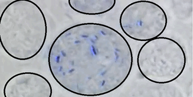
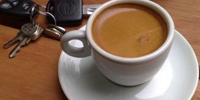

Pocas partes de la casa tienen tantos sinónimos como el inodoro (que dependerán según el país): desde "trono" a retrete, sanitario, etc...

Celulas Inteligentes
Un grupo de ingenieros químicos de la Universidad Estatal de Pennsylvania ha logrado crear los primeros motores sintéticos...

Cafe - Cafeina
Dos cafés expreso al día. Es aproximadamente la cantidad de cafeína que, según un nuevo experimento científico, ayuda a potenciar nuestra memoria a largo plazo....